Optagelsesprøve til de gymnasiale uddannelser
Mandag den 26. august 2024
Kl. 10.00-14.00
Du har i alt 4 timer til prøven. Du bestemmer selv, i hvilken rækkefølge du besvarer opgaverne, og hvor lang tid du bruger på opgaverne i hvert fag.
Det er ikke tilladt at bruge internettet som fagligt hjælpemiddel eller foretage søgninger på
internettet, fx ved hjælp af Google.
Det er ikke tilladt at kommunikere med omverdenen.
Det er tilladt at benytte alle øvrige hjælpemidler, fx lærebøger, formelsamlinger, lommeregner, ordbøger, grammatiske oversigter og noter. Disse hjælpemidler kan enten medbringes på computeren eller på papir. Skolen kan tillade, at ordbøger tilgås via internettet.
Din besvarelse skal afleveres i et samlet dokument. Når du er klar til at aflevere din besvarelse, skal du gøre følgende:
- Tryk på knappen ’Dan og gem pdf’ i menuen i venstre side.
- Navngiv din besvarelse ’Optagelsesprøve’ og gem dokumentet på din computer.
- Tjek din besvarelse igennem og kontroller, at den indeholder de svar på opgaverne, som du ønsker at aflevere. Ser det ud til, at der er fejl i besvarelsen (fx svar på enkelte opgaver, der ikke er med i besvarelsen), skal du kontakte en eksamensvagt.
- Aflever din besvarelse i Netprøver.
Optagelsesprøven er i udgangspunktet anonym for dem, som skal bedømme din besvarelse. Det er derfor vigtigt, at du ikke skriver dit navn noget sted i besvarelsen eller i titlen på dit dokument, som du afleverer i Netprøver.
Dansk
Prøven i dansk består af tre delprøver:
- Den første delprøve er en læsefærdighedsprøve, der består af to tekster. Til hver af de to tekster er udarbejdet 10 opgaver. Alle opgaver skal besvares.
- Den anden delprøve er en grammatisk færdighedsprøve, hvor udsagnsled (verballed) skal omskrives i tid.
- Den tredje delprøve er en skriftlig færdighedsprøve.
Du kan højst få 25 point i danskprøven:
| Opgave | Antal mulige point |
|---|---|
| Læsefærdighed | 12 point |
| Grammatiske færdighed | 6 point |
| Skriftlig færdighed | 7 point |
Dansk
Læsefærdighed - Tekst 1
Til teksten er udarbejdet 10 opgaver.
Der er kun ét rigtigt svar til hver opgave.
For at opnå 12 point i den samlede læsefærdighedsprøve (tekst 1 og 2) skal mindst 18 af de i
alt 20 opgaver i prøven være korrekt besvaret.
(Populus tremula er den latinske betegnelse for poppeltræet bævre-asp)
Populus tremula
Af Nanna Goul
Issa lytter til vinden, til bladenes snurren. Hun ligger på ryggen i sengen og lader tankerne rejse hvorhen de vil. Indimellem hiver hun strimler af det gamle, gullige tapet, der er flere lag under, flere motiver, mønstre, farver. Issa har en plan om at nå ind til den bare væg, at trævle tiderne langsomt op.
Karin sover stadigvæk nedenunder, det har hun gjort, siden bøgen sprang ud. Issa har overvejet, om hun bare lader som om, så meget kan et menneske vel ikke sove. Uanset ligger Karin i sengen med lukkede øjne, hendes værelse lugter surt, af indtørret sved og fiskefilet. Issa bryder sig ikke om paneret mad, og nu er det juni.
Et stort vindstød brager mod ruden, Issa kan høre lyden af noget, der knalder mod asfalten. Hun springer op af sengen, kigger ud ad vinduet mod vejen. Det er Villums cykel, vinden har kastet ud midt på vejen. Nu ligger den blå, svinedyre racercykel dér, hvis der kommer en bil, en lastbil, der ikke ser sig for, bliver den maltrakteret. Issa bliver varm om hjertet. Villum sjusker, værdsætter ikke ting. Issa er blevet passet derovre, hos Villum, flere gange, da hun var mindre, det har altid irriteret hende. Engang tænkte Issa, at det handlede om højere retfærdighed, men til sidst blev hun enig med sig selv om, at det alligevel ikke var dét. Villum har bare ikke nogen undskyldning for sin måde at glide dovent og sjasket hen over alting. Som en beskidt karklud, der efterlader spor.
Issa beslutter sig for at stå op, hun tager en sports-bh på, maser brysterne så flade, hun kan, en sort hoodie, jeans, et øjeblik står hun og svajer, bliver ligesom grebet af poplens rytme derude i vinden bag ruden. Poplen blev stynet1 for et års tid siden, den blev klippet lidt skævt, men Issa kan godt lide formen på kronen. Som to knytnæver, der vender sig mod hinanden og tilsammen danner et hjerte.
Trappetrinene knager, Issa træder så hårdt på dem, hun kan, og åbner døren ind til soveværelset. Karin ligger med åben mund. Og polypper og galde og hvepse. Issa går hen til gabet og holder hånden over. Et ildelugtende, varmt pust kommer dernedefra.
I køleskabet finder Issa en ensom klat leverpostej i sit metalliske hus, et æble og en hel jordbæryoghurt. Hun spiser i den store vindueskarm i stuen, betragter to turtelduer, der gnider sig op ad hinanden på toppen af en lygtepæl. Issa håber, at nogen snart kommer og kører Villums cykel over.
På et tidspunkt må noget jo ske.
Nogen burde også rydde op. Melde Issa syg på Aula. Men det er jo allerede for sent. Issa går hen til kommoden og dufter til de absurd lilla hyacinter, der står foran billedet af Karsten, dengang han havde hår. På billedet har Karsten mellemblondt tyskerhår, en tatovering af en mobiltelefon på armen, smilende øjne, der ser ned på den lille buttede baby, han holder i sine arme. Issa var en tyk og bestemt lille madamme som barn, sagde Karin, dengang hun kunne lide at sige noget. Sådan rigtigt.
Issa får kvalme af duften fra hyacinterne, den er for intens og altomsluttende, hun løber ud i haven, det hele vælter ud igen ved solbærbusken. Yoghurt, æblestykker, det er ikke til at holde ud. Alting bliver spildt.
Poplen snurrer, Issa går langsomt hen til træet, lægger armene om stammen. Som var poplen et barn. En pude. En ven. En taske. En kat. En mor. Vejrtrækningen hopper som en gummibold. Issas fingerspidser mod den gamle knudrede hud, de følger revnerne og blodårerne, de bevæger sig til træets fod. Her lægger Issa sig ned. Her slipper Issa tårerne fri, de løber langt ned til træets rødder, hun hulker direkte ind bag verdenstapetet.
Sådan noget sker, tænker Issa.
Hun lytter til vinden, til bladenes flaksen, en lille fugl i træets top, en blåmejse, en spurv, en musvit? Issa ved ikke den slags, men fuglen begynder at synge.
På toilettet spuler Issa sit ansigt, går ind til Karin, der pludselig åbner øjnene.
– Hvad sker der?
– Jeg smutter.
– Hvorhen?
– Hvem ved.
– Vi ses senere, skat.
– Vi ses, Karin.
– Jeg hedder ikke Karin.
– Jo, du gør.
– Jeg hedder mor.
– Vi ses
Issa går forbi Villums cykel på vejen, hun springer op på Karins havelåge2 og kører mod havnen. Villavejene er rolige, flere af husene ser drømmende mod havet med deres malede øjne. Da Issa var helt lille, vidste hun, at alle huse havde en kerne, der kunne aflæses i deres vinduer. Vinduer betyder mere, end de fleste vil indrømme, det tænker Issa stadig, og hun tænker også, at der er meget lysegrønt i dette forår, måske endda for meget.
Alle taler med søtunge. Sikke noget pjat. Issa stiller cyklen op ad skiltet ved fiskehandleren. Hun kanter sig forbi alle dem, der leger frie i solen, går ud på molen og videre hen til lystbådehavnen, sætter sig på en bænk og tager sin hoodie af.
Solen varmer alle.
Issa lytter til vandet, til bølgernes slag.
Så ser hun noget i en båd ved kajen.
En skaldet mand og en behåret kvinde.
En mand, der griner højrøstet, løfter en øl mod himlen.
En kvinde med sorte solbriller, røde læber, der afsætter mærker, latter som en ringetone.
Issa bevæger sin krop som en bølge frem og tilbage, frem og tilbage.
Kvinden og manden griner og ringer, griner og ringer.
Issa beslutter sig og bevæger sig som et menneske med en retning.
Hun går mod manden og kvinden.
Hun nærmer sig båden, hun vinker til manden. Vinker og vinker.
Manden ser hende først ikke, og da han gør, taber han smilet, underkæben, øllen.
Gyldne dråber falder som tung regn på en bryllupsdag.
– Sikke noget pis.
Manden vender sig om, tager armen om kvinden, man kan stadig se mobiltelefonen.
– Lad os gå inden for.
– Det er for varmt Karsten, lad os blive.
Issa står nu ved båden stiv som en mast.
– Hej, siger kvinden.
Issa kan ikke bevæge læberne, de gør det modsatte af kvindens røde.
Manden står med ryggen til, tørrer øl af sine shorts.
– Vil du noget, spørger kvinden så.
Manden vender sig om, Issa og manden står og kigger på hinanden.
Issa lytter til vinden, til bølgernes slag.
– Jeg ville bare sig hej til min far.
Kvindens ansigt krøller sig sammen som et stykke papir.
– Karsten?
– Ja, det her er så Marie.
– Marie?
– Jeg hedder faktisk Issa, siger Issa.
– Issa? Karsten rynker brynene.
– Sådan er det nu.
– Aha. Kan jeg byde på noget?
– Har du noget at byde på?
– Hold op. Jeg har cola.
– Ellers tak.
De står lidt.
Karsten træder hen mod Issa.
– Nogle gange må man tage sin skæbne i egen hånd.
– Hvad betyder det?
– Jeg beklager Issa, jeg har ikke dét, du gerne vil have.
– Hvem har også sagt, at jeg vil have noget?
Issa vender sig om, går ned af den knirkende bro og skubber hårdt til døren, da hun træder ind hos fiskehandleren.
Issa lytter til bladenes rislen, til fuglen i træet, det kunne være en spurv. Hun er hjemme igen, stiller sin cykel op ad husmuren, går hen til Villums cykel. Sætter sig på knæ. Mærker det metalliske blå, den glatte, lune overflade, der skinner i solen. Issa griber fat om cyklen, rejser den op og trækker cyklen ind over det knitrende grus. En duft af stegt bacon siver ud af køkkenvinduet, da Issa stiller cyklen i stativet ved hoveddøren.
Da hun vender sig om, står Villum der.
Hans lyse, krøllede hår, fregner, smalle øjne, han ser overrasket ud, sender Issa et smil.
– Har du reddet cyklen? Jeg kommer altid til at smide den åndssvage steder.
Issa nikker.
– Tak, Issa. Det havde du nu ikke behøvet.
– Jeg ved det. Jeg overvejede også at køre hen over den.
Issa griner, så gør Villum også. Han prøver at fange hendes blik.
– Men ærligt talt, jeg ved ikke, hvad der gik af mig.
– Nå, men tak i hvert fald.
Issa kigger ned, Villum tegner en halvcirkel i gruset med spidsen af sin hvide støvle, rømmer sig.
– Jeg troede egentlig ikke, du kunne lide mig.
– Det kunne jeg heller ikke.
Villum kigger op, Issa ser ham i øjnene, de er meget grønne, det har hun ikke tænkt over før, så vender hun om og løber over vejen.
Lavendel, L’Oréal, lys. Allerede i entreen kan Issa mærke, at noget er anderledes.
– Hallo?
Karin kommer ned af trappen med et håndklæde om hovedet, hun har været i bad.
– Hej min skat.
– Hvad er der sket?
– Jeg er stået op.
Issa betragter Karin, der nu tager bukser på, strømper, hun ser ud ad det store vindue, bladene på poplens krone, der ryster og ryster i vinden, så tager hun pakken op af tasken.
I køkkenet lægger hun fiskefrikadellerne på en tallerken, smider posen ned i skraldespanden ovenpå hyacinterne.
– Mor, jeg har købt fiskefrikadeller.
Karin kommer løbende, hendes mund som en appelsinbåd.
– Hvor er det fuldkommen vidunderligt.
– Egentlig er det bare hakket fisk.
(2022)
1 Beskåret
2 Slang for gammel brugt cykel
1. Hvem er Karin?
x
x
x
x
2. Hvornår udspiller handlingen sig?
x
x
x
x
3. Hvordan er stemningen i Issa og Karins hjem?
x
x
x
x
4. Beskrivelsen af Karin tyder på, at hun
x
x
x
x
5. Issas følelser over for Villum kan bedst beskrives med ordene
x
x
x
x
6. Hvem er Karsten?
x
x
x
x
7. Hvordan reagerer Karsten på at se Issa?
x
x
x
x
8. Hvad er det Karsten tror, Issa vil have?
x
x
x
x
9. Poplen kan være et symbol på
x
x
x
x
10. Novellens tema kan bedst beskrives med ordene
x
x
x
x
Læsefærdighed - Tekst 2
Til teksten er udarbejdet 10 opgaver. Der er kun ét rigtigt svar til hver opgave.
For at opnå 12 point i den samlede læsefærdighedsprøve (tekst 1 og 2) skal mindst 18 af de i
alt 20 opgaver i prøven være korrekt besvaret.
Pesticider kan påvirke sædceller
Af Kristian Herlufsen
Ny forskning på Rigshospitalet peger på, at pesticidrester fra fødevarer kan påvirke sædcellernes evne til at finde vej i livmoderen og dermed være en af årsagerne til den stigende infertilitet1. I 2013 blev 8,5% af de danske børn født efter hjælp fra kunstig befrugtning. I 2021 var tallet (eksploderet, faldet, stagneret, steget) til 10,5%, viser tal fra Dansk Fertilitetsselskab.
Hver dag kommer der i gennemsnit 200 nye danskere til verden på landets fødeafdelinger. Masser af lykkelige øjeblikke, men for hvert 10. par har vejen til at blive forældre været besværlig. 1 ud af 10 danske børn er nemlig undfanget på (banegården, biblioteket, hospitalet, sportspladsen) eller en fertilitetsklinik frem for hjemme i dobbeltsengen. Nu har forskere på Rigshospitalet fundet ud af, at rester af pesticider kan påvirke vigtige funktioner i sædcellerne, så de ikke kan finde vej gennem kvindens kønsveje og frem til ægget, der sidder klar til at blive befrugtet i æggelederen.
Når (fysioterapeuter, læger, lærere, tandlæger) skal finde og behandle årsagerne til, at et par ikke kan blive gravide, skyldes omkring en tredjedel af tilfældene problemer med mandens sædkvalitet, en tredjedel skyldes kvindens fysiologi, for eksempel forsnævringer i æggelederne, men i den sidste tredjedel af tilfældene er der ikke en (forkert, overnaturlig, skjult, åbenlys) forklaring på, hvorfor et barn ikke kan undfanges naturligt, fortæller Anders Rehfeld, der er læge og forsker ved afdelingen ’Vækst og Reproduktion’ på Rigshospitalet. Han har tidligere påvist, at UV-filtre fra blandt andet solcreme kan påvirke sædcellernes funktion:
»Jeg har altid interesseret mig for den gruppe, der hedder de uforklarlige, (glade, tilfredse, ufrivilligt, vanvittigt) barnløse. Nu viser vores undersøgelser, at pesticider, der findes rester af i nogle madvarer og nogle steder i grundvandet, i nogle tilfælde kan påvirke sædcellefunktionen så meget, at vi frygter, at de ikke kan finde vej frem til ægget i æggelederen. Dermed kan det blive sværere at blive gravid.«
Pesticider (forstyrrer, hjælper, støtter, vejleder) GPS-signalet. For at forstå, hvordan pesticider gør dette, skal man forstå sædcellers funktion. Sædceller er i princippet simple, uintelligente celler, som ikke aner, hvad de skal stille (an, frem, hen, op), når de kommer ind i kvindens kønsveje. For at finde frem til ægget, der sidder klar til befrugtning yderst i kvindens æggeledere, er sædcellen afhængig af et signal. Det signal kommer fra ægget, der udsender hormonet progesteron, når det er klar til at blive befrugtet.
Koncentrationen af progesteron er (højest, mindst, rødest, svagest) tæt ved ægget og falder, jo længere væk man kommer fra ægget. På den måde kan sædcellerne bruge signalet fra ægget som en slags GPS til at vide, hvilken vej de skal svømme.
Desværre er sædcellens GPS letpåvirkelig – den reagerer på mange forskellige signaler, og det var med til at vække nysgerrigheden hos Michala R. Birch, der er ph.d.-studerende og har stået for undersøgelsen af, om pesticider kan påvirke GPS’en i sædcellerne:
»Pesticider er til stede i vores krop. Det ved vi fra undersøgelser, hvor man har vist, at der er pesticidrester i både urin og hår, men ingen har tidligere undersøgt, om pesticiderne kan (adskille, fjerne, påvirke, æde) sædceller.«
Gennem de sidste 40 år er de danske mænds sædkvalitet dalet og dalet. Undersøgelser peger på, at sædkvaliteten i gennemsnit er halveret i perioden. Med kun halvt så mange levedygtige sædceller som tidligere er der mindre sandsynlighed for en befrugtning af ægget, fortæller Anders Rehfeld:
»Har man (god, høj, ingen, nedsat) sædkvalitet, er det kun ganske få sædceller, der når frem til æggelederen. Hvis der så er stoffer i kvindens kønsveje, der opfører sig som progesteron, så frygter vi, at sædcellerne bliver retningsforvirrede, og at chancen for at blive gravid mindskes.«
Retningsforvirrede er netop, hvad sædcellerne risikerer at blive af pesticidrester, viste undersøgelsen på Rigshospitalet. I forsøget testede Michala R. Birch hvordan sædceller reagerede på 53 forskellige, almindeligt forekommende pesticider, og 28 af de 53 pesticider kunne efterligne det progesteron-signal, som (hjernen, leveren, tarmene, ægget) udsender.
1 Ufrugtbarhed
Grammatisk færdighed
Du skal følge anvisningen og besvare opgaven. Du kan højst få 6 point for din besvarelse.
Originaltekst
Trappetrinene knager, Issa træder så hårdt på dem, hun kan, og åbner døren ind til soveværelset. Karin ligger med åben mund. Og polypper og galde og hvepse. Issa går hen til gabet og holder hånden over. Et ildelugtende, varmt pust kommer dernedefra. I køleskabet finder Issa en ensom klat leverpostej i sit metalliske hus, et æble og en hel jordbæryoghurt. Hun spiser i den store vindueskarm i stuen, betragter to turtelduer, der gnider sig op ad hinanden på toppen af en lygtepæl. Issa håber...
Skriv din redigerede version i boksen. Husk at understrege det ændrede udsagnsled som i eksemplet. Du understreger ordet ved at markere det og dernæst trykke på U.
Skriftlig færdighed
Du skal følge anvisningerne i boksen nedenfor og besvare opgaven. Din besvarelse bliver vurderet ud fra følgende kriterier:
-
sammenhæng
-
grammatik
-
retskrivning
-
tegnsætning
Du kan højst få 7 point for din besvarelse.
Med udgangspunkt i novellen Populus tremula skal du skrive en fortsættelse på handlingen. Besvarelsen skal have et omfang på ca. 200 ord.
Skriv din besvarelse i boksen herunder.
Engelsk
Prøven i engelsk består af fem delprøver: fire prøver i sprog og grammatik og en prøve i skriftlig fremstilling.
| Opgave | Antal mulige point |
|---|---|
| Section 1 | 4 point |
| Section 2 | 4 point |
| Section 3 | 4 point |
| Section 4 | 6 point |
| Section 5 | 7 point |
Section 1
Choose the right word.
There are more words than you will need. No word may be used more than once.
There is an example in the first sentence.
- dedicate
- -
- dedicates
- -
- dedicated
- -
- dedicating
- -
- dedication
- -
- dedications
- -
dedicatedly
Not many people have served our small community for as long as you have. We are very grateful.
The professor never regretted that he had his entire life to the study of biological organisms.
The dying author decided to her final novel to all of her devoted readers.
Martha has quit her job and she now all her time to her great passion: fighting for human rights.
It takes great to achieve one’s goals – and sometimes a little bit of luck.
Section 2
Read the text below.
Use the word in brackets and write the correct form of the word on the line as shown in the two examples.
Section 3
Section 4
Find and replace the six mistakes with the correct words.
There is an example in the first sentence.
Section 5

- fun
- -
- so
- -
- crowd
- -
- cheer
- -
- together
Matematik
Optagelsesprøven i matematik består af 18 opgaver med i alt 25 delopgaver. I hver delopgave
kan
du opnå 1 point.
Samlet set kan du altså højst opnå 25 point i matematik.
Du må bruge alle hjælpemidler, herunder bøger, noter, computer og lommeregner.
I prøven kan du få brug for at skrive brøker og regnetegn. Du kan skrive
- Du kan skrive en brøkstreg ved at bruge dette tegn: / Eksempel: 1/3
- Du kan skrive et gangetegn ved at bruge dette tegn: * Eksempel: 2*6
- Du kan skrive en potens ved at bruge dette tegn: ^ Eksempel: 4^2
Matematik
Opgaver
Opgave 1
Opgave 2
Opgave 3
Fahra vil koge ris. Hun skal bruge 4 dL ris til 6 dL vand.
 Tegning: Hans Ole Herbst
Tegning: Hans Ole Herbst
Hvor mange deciliter vand skal hun bruge til 6 dL ris?
Opgave 4
 Tegning: Hans Ole Herbst
Tegning: Hans Ole Herbst
På de to tegninger er der nogle løse tændstikker og nogle tændstikker i æsker. Alle æskerne indeholder samme antal tændstikker.
Der er lige mange tændstikker på tegning 1 og på tegning 2.
Hvor mange tændstikker er der i hver æske?
Opgave 5
5\cdot x + 2 = 22
Opgave 6
3b + 5 - 2b
Opgave 7
Hvilket tal er størst?
Sæt et X.
|
0,725 |
0,73 |
0,7240 |
0,0777 |
0,699 |
Opgave 8
Skriv en anden brøk, der har samme værdi som \frac{4}{10}
Opgave 9
Omkskriv \frac{6}{5} til et decimaltal.
Opgave 10
Fem børn skal dele 1,5 L æblemost.
Hvor meget får de hver, hvis de deler lige?
 Tegning: Hans Ole Herbst
Tegning: Hans Ole Herbst
Opgave 11
5 % af 120 kr. er
kr.
Opgave 12
I koordinatsystemet er tegnet 5 rette linjer, l, m, n, o og p.
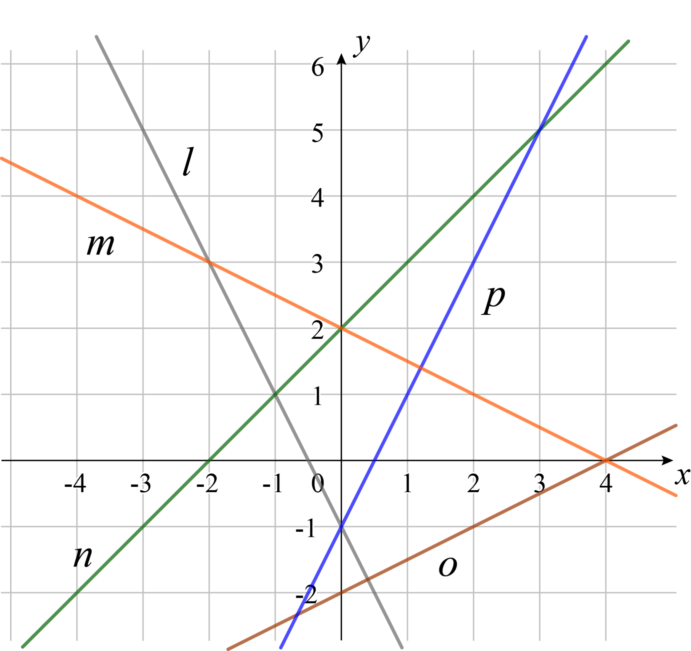
Tegning: John SchouI hvilket punkt skærer linjerne n og p hinanden?
| ( , ) |
Hvilket hældningstal har linje o?
Hvilken af linjerne har ligningen y = x + 2 ?
Sæt et X.
|
l |
m |
n |
o |
p |
Opgave 13
Skitsen viser tre linjer, der skærer hinanden.
 Skitse
Skitse
Størrelsen af vinkel u er °
Størrelsen af vinkel v er °
Opgave 14
Figuren viser en rombe med to diagonaler a og b.
Man kan beregne omkredsen af en rombe med formlen i den blå boks.
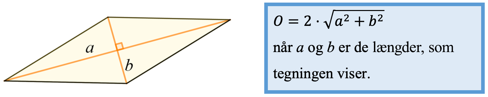
Hvor stor er omkredsen af en rombe, hvor a = 5 og b = 2?
Opgave 15
Diagrammet viser, hvor mange forskellige brugere et bibliotek havde pr. time på en bestemt dag.

Hvor mange brugere havde biblioteket mellem kl. 14 og 15?
Hvor stor forskel var der på det mindste antal brugere og det største antal brugere, som biblioteket havde i løbet af en time?
Hvor mange brugere havde biblioteket i gennemsnit pr. time mellem kl. 10 og 20?
Opgave 16
Morten kaster en 12-sidet terning én gang. Terningen kan lande på tallene 1-12, og der er lige stor sandsynlighed for hvert udfald.
Hvor stor er sandsynligheden for, at den 12-sidede terning lander på et lige tal?

Opgave 17
Tegningen viser en trekant og en arealenhed.
Hvor stort er arealet af trekanten?
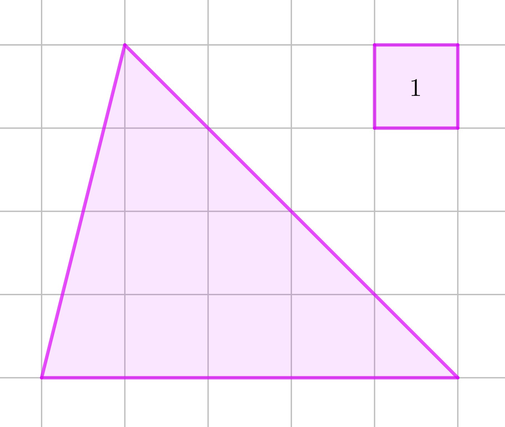
Opgave 18
Her er de fire første figurer i en figurfølge med prikker.
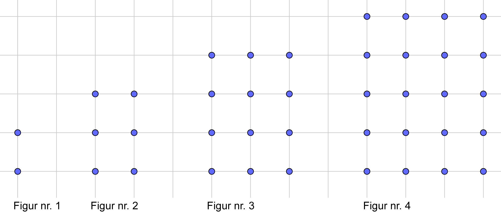
Figurfølgen fortsætter på samme måde, som den er begyndt.
Hvor mange prikker er der i figur nr. 5?
prikkerHvilket nummer har den figur, der består af 90 prikker?
Fysik/kemi
Prøven i fysik/kemi består af 24 opgaver, og du kan opnå 1 eller 2 point i hver enkelt opgave. De 24 opgaver er fordelt på 5 områder indenfor fysik/kemi. Du kan samlet få op til 25 point.
Grundstoffernes periodesystem findes sidst i opgaven.
1. Grundstoffer og atomer
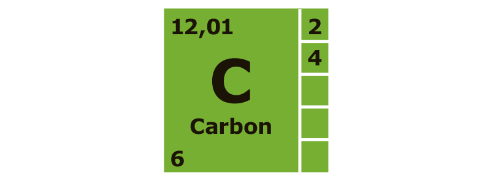
Figur 1.a: Carbon fra grundstoffernes periodesystem
|
2 |
4 |
6 |
8 |
10 |
|
centrum |
kernen |
midten |
protonområde |
skal |
Der findes mange forskellige kemiske forbindelser, der indeholder carbon. Nedenfor er vist tre af dem.
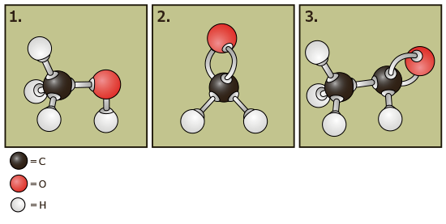
Figur 1.c: Molekylmodeller|
model nr. 1 |
model nr. 2 |
model nr. 3 |
Carbon findes i to rene former i naturen. Det er grafit og
|
brunkul |
diamant |
tjære |
|
carbondioxid |
kulstof-14 |
kuldioxid |
2. Baggrundsstråling
Hvad er baggrundsstråling? Sæt X.
|
ioniserende stråling |
laserstråling |
lydbølger |
synligt lys |
En elev vil undersøge, hvordan baggrundsstrålingen i laboratoriet varierer gennem en periode på 30 minutter. Se forsøgsopstillingen på figur 2.a. Geigertælleren registrerer 180 gange, hvor mange impulser der kommer i løbet af 10 sekunder.
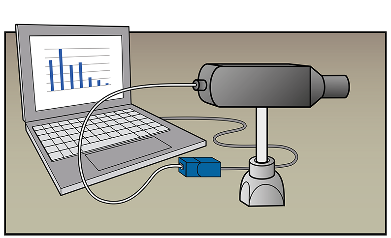
Figur 2.a: En geigertæller registrerer baggrundsstrålingen.Målingerne bliver vist i et søjlediagram. Se figur 2.b.
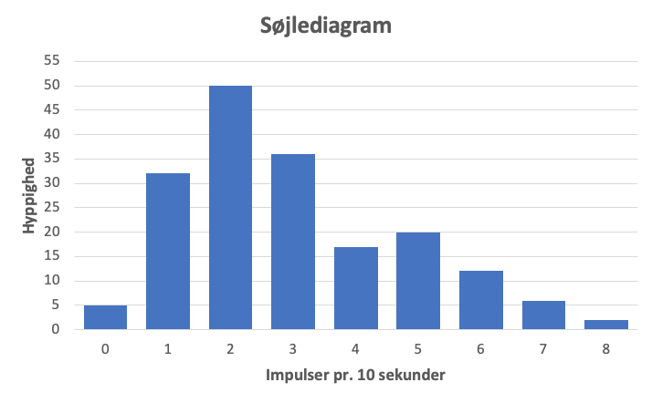
Figur 2.b: Søjlediagram over fordelingen.Uran (U) er et af de radioaktive grundstoffer, der bidrager til baggrundsstrålingen. Der findes blandt andet uran i havvand, granit og forskellige slags uranmalme. Se tabel 2.a.
![Uranindhold i forskellige materialer
Havvand 0,003 gram per ton vand
Brød og fisk 0,0035 gram per ton
Jordens yderste skorpe - gennemsnit 2,8 gram per ton bjergart
Sandsten 2 gram per ton sandsten
Granit 4-5 gram per ton granit
Uranmalm med meget lille indhold uran (Namibia) 100 gram per ton malm
Uranmalm fra Kvanefjeld (omtrentlig værdi) 360 gram per ton malm
Uranmalm med lille indhold uran 1000 gram per ton malm
Uranmalm med meget uran 20 000 gram per ton malm
Uranmalm med meget højt uranindhold (Canada) 200 000 gram per ton malm](images/Fysik-Kemi/Saet6_tabel2.1_uran.png) Tabel 2.a: Uranindhold (Kilde: GEUS)
Tabel 2.a: Uranindhold (Kilde: GEUS)
Eleven vil undersøge strålingen fra havvand, sandsten, granit og kvanefjeld. Eleven bruger oplysningerne i tabel 2.a til at opstille en hypotese om, fra hvilket materiale en geigertæller vil registrere det højeste antal impulser gennem 1 time.
| Hypotese | Sæt X |
|---|---|
| Havvand giver det højeste antal impulser. | |
| Sandsten giver det højeste antal impulser. | |
| Granit giver det højeste antal impulser. | |
| Kvanefjeld giver det højeste antal impulser. |
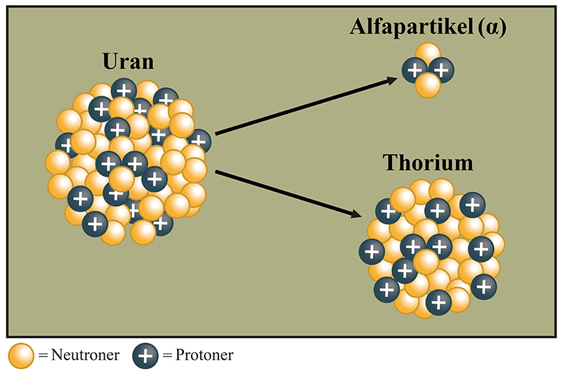
Figur 2.c: En urankerne udsender en alfapartikel.| Mulige ord |
|
|
I urankernen er der protoner. En
urankerne kan spontant udsende en
alfapartikel, som er en . Hvis det sker, omdannes urankernen
til en
thoriumkerne med
protontal.
|
3. Solceller
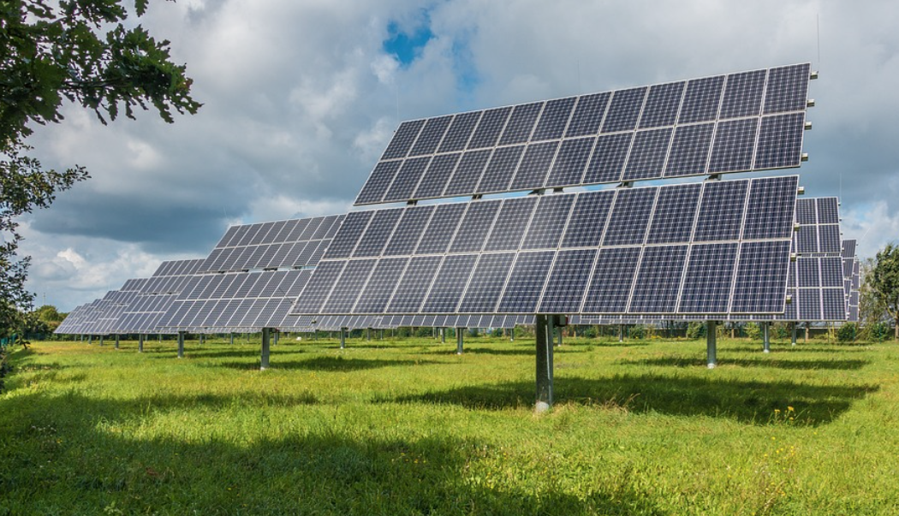
Figur 3.a: Solcellepark|
elektrisk energi |
kemisk energi |
termisk energi/varmeenergi |
|
lysets intensitet |
luftens fugtighed |
vindens hastighed |
En elev vil undersøge sammenhængen mellem en solcelles effekt og solcellens vinkel i
forhold til vandret. Eleven anvender en solcelle, der kan indstilles i forskellige
vinkler. Se figur 3.b.
Eleven anbringer solcellen, så den vender mod syd og finder sammenhængende værdier
mellem solcellens vinkel i forhold til vandret, og den effekt solcellen kan yde. De
indsamlede data sættes ind i et diagram, se figur 3.c.
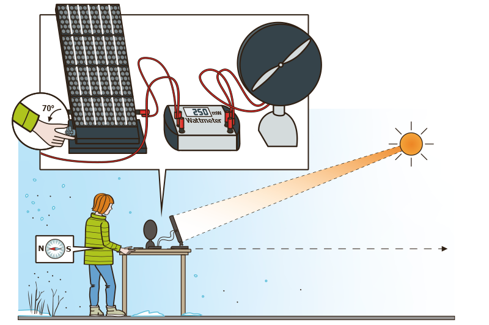
Figur 3.b: Solcellen kan indstilles i forskellige vinkler i forhold til vandret. Figur 3.c: Elevens forsøgsdata.
Figur 3.c: Elevens forsøgsdata.
Eleven har gennemført sin undersøgelse om sommeren. Eleven overvejer, hvad der vil der den optimale placering for en solcelle om vinteren både med hensyn til verdenshjørne og vinkel.
Hvilket verdenshjørne skal solcellen pege mod om vinteren for at yde den største effekt? Sæt X.
|
nord |
syd |
øst |
vest |
Hvilken vinkel skal solcelle i Danmark have om vinteren i forhold til den optimale vinkel om sommeren, for at optimal effekt? Sæt X.
|
mindre vinkel |
samme vinkel |
større vinkel |
4. Brus i danskvand
En elev vil undersøge sin sodavandsmaskine. Eleven fremstiller sin sodavand på forskellige måder og måler pH i opløsningerne.
Vandet har samme temperatur i de 3 forsøg.
| Beskrivelse | pH |
|---|---|
| Vand uden tilsat CO2 | 7 |
| Vand tilsat CO2 i 2 sekunder | 6,5 |
| Vand tilsat CO2 i 5 sekunder | 5,8 |
Tabel 4.a
|
sur |
neutral |
basisk |
Eleven laver 3 halvliters flasker med danskvand i sin Sodastream.
| Danskvand | pH |
|---|---|
| Nr. 1 | 6,8 |
| Nr. 2 | 6,4 |
| Nr. 3 | 6,1 |
Tabel 4.b
Hvilken af flaskerne med danskvand vist i tabel 4.b tilsat mest CO2? Sæt X.
|
Nr. 1 |
Nr. 2 |
Nr. 3 |
Når CO2 opløses i vand, sker følgende reaktion:

Hvad gælder om antallet af carbonatomer (C) på venstre og højre side af
reaktionspilen?
Svar med en hel sætning:
Reaktionen mellem CO2 og vand ses også, når verdenshavene optager CO2 fra atmosfæren.
Hvordan vil en større mængde CO2 i atmosfæren påvirke pH-værdien i verdenshavene? Sæt X.
|
pH stiger |
pH falder |
pH er uændret |
5. Cola med is
Et glas med en rest cola og nogle isterninger er glemt til en fest på en varm sommerdag.
Hvilken temperatur vil colaen få, hvis det står i glasset i lang tid på en varm sommerdag? Sæt X.
|
omkring 0 °C |
omkring 15 °C |
omkring 25 °C |
En elev undersøger en dag i marts, hvordan temperaturen i en cola med is ændrer sig. Nedenstående figur viser temperaturens afhængighed af tiden.
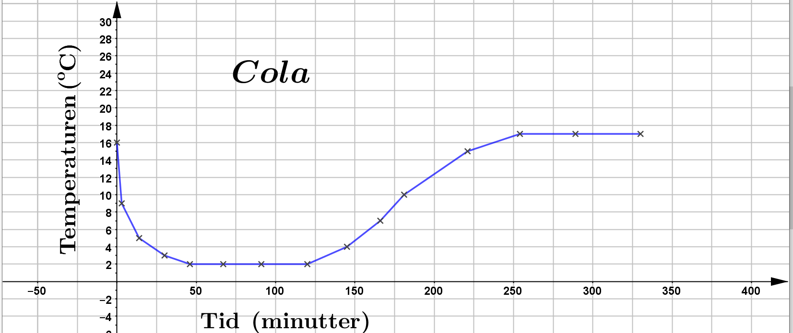
Figur 5.a: Temperaturen som funktion af tiden.Hvad kaldes ændringen, når isterningerne går den fra fast form til flydende form? Sæt X.
|
fordampning |
fortætning |
smeltning |
kogning |
 Figur 5.b: Et glas med cola og is.
Figur 5.b: Et glas med cola og is.
Som det ses på figur 5.b, flyder isterningerne ovenpå cola, og en del af isterningerne er over vandoverfladen.
| Udsagn | Sæt X |
|---|---|
| Isterningerne har mindre densitet end cola. | |
| Isterningerne har samme densitet som cola. | |
| Isterningerne har større densitet end cola. |
Oplysninger til brug for Copydan
Anvendt materiale i Dansk:
Kristian Herlufsen: Pesticider kan påvirke sædceller.
Samvirke.
Oktober, 2022.
Anvendt materiale i engelsk:
Image credit:
“The Ultimate Guide to 2022 Music Festivals”, Thrillist website, viewed September 2022,
https://www.thrillist.com/
Dette prøvesæt er omfattet af ophavsretten, jf. ophavsretslovens § 1.
Prøvesættet må alene anvendes til den på prøvesættet anførte prøve.
Al anden anvendelse af prøvesættet, herunder visning eller deling f.eks. via
internettet,
sociale medier, portaler og bøger, udgør en krænkelse af Børne- og
Undervisningsministeriets
og evt. tredjemands ophavsret og er ikke tilladt.
Overtrædelse af ophavsretten kan være erstatningspådragende og/eller strafbart.
Prøvesættet kan dog, efter at prøven er afsluttet, anvendes til undervisningsbrug på
uddannelser m.v. omfattet af den lovgivning, som Styrelsen for Undervisning og Kvalitet
administrerer.